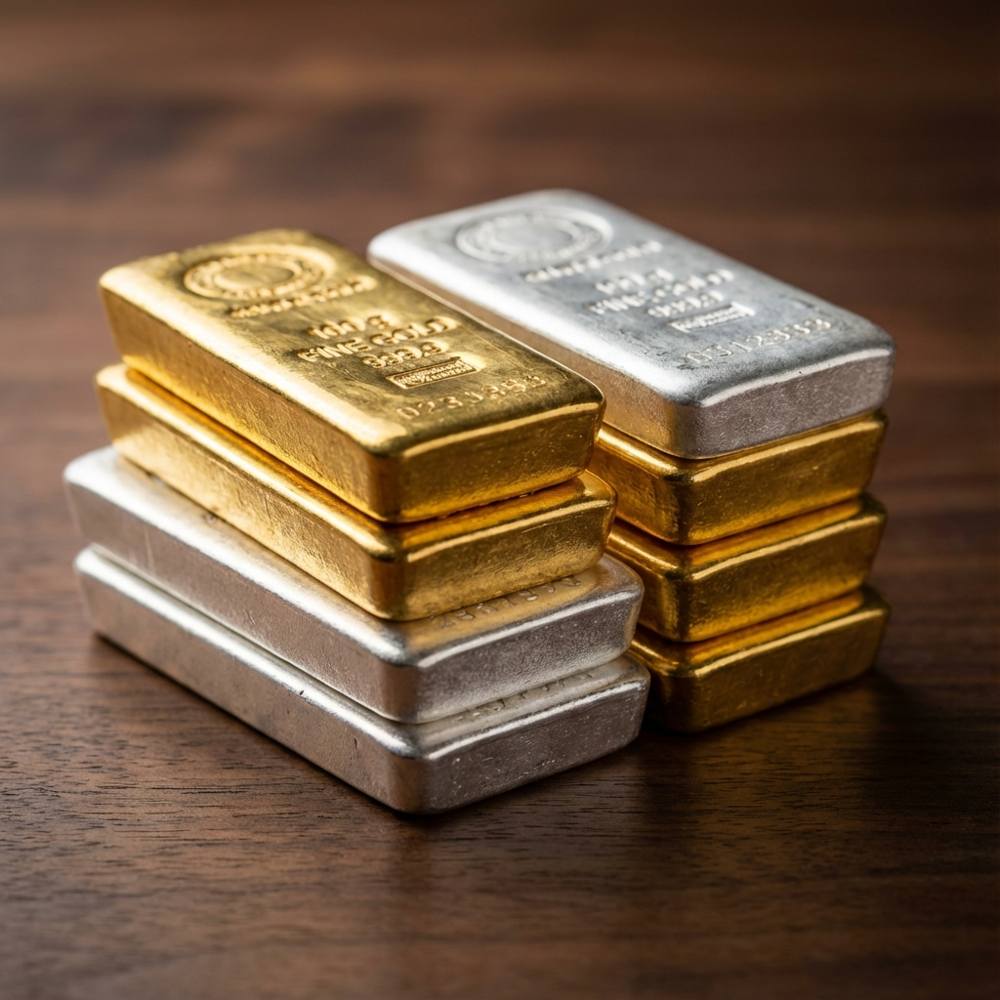

Gold vs Silver in Times of Crisis: Which Is the Better Safe Haven?

Key Takeaways
- Protection: Gold provides superior protection during systemic and geopolitical crises.
- Recovery: Silver is more volatile but often outperforms during inflationary recoveries.
- Risk Profile: Gold acts as portfolio insurance; silver offers higher upside with higher risk.
- Context: The effectiveness of each metal depends on the type of crisis.
IN PERIODS OF heightened market volatility—driven by geopolitical conflict, persistent inflation, systemic financial stress, or political instability—a pronounced flight to quality occurs as investors seek assets capable of preserving capital. Within the universe of potential safe havens, gold and silver have historically held a preeminent position.
While both are classified as precious metals and function as stores of value, their performance characteristics and market behaviors diverge significantly during crisis scenarios. Gold is ubiquitously regarded as the terminal safe-haven asset and the ultimate form of financial insurance. Silver, by contrast, is a hybrid asset, possessing both monetary characteristics and a substantial, non-discretionary industrial demand component.
A nuanced understanding of these fundamental differences is critical for effective risk management and strategic asset allocation. An improper allocation based on a mischaracterization of their respective roles can lead to suboptimal portfolio outcomes, including unexpected volatility or capital loss, precisely when stability is most required.
This analysis will provide a detailed examination of the empirical performance of gold and silver across various crisis typologies, elucidate the fundamental drivers of their distinct market behaviors, and present a strategic framework for their complementary use in portfolio construction.
A Taxonomy of Modern Market Crises
The term "market crisis" is not a monolithic concept. Such events manifest in various forms, each driven by distinct causal factors and each exerting a unique influence on asset prices. A comprehensive analysis requires a clear taxonomy of these crisis typologies, as the performance of safe-haven assets like gold and silver is highly dependent on the specific nature of the systemic shock.
The primary categories of market crises include:
- Systemic Financial Shocks: Characterized by a sudden and severe contraction in credit and a collapse in the valuation of financial assets. Examples include the Global Financial Crisis of 2008 and the initial market crash during the COVID-19 pandemic in 2020.
- Inflationary Crises: Defined by a prolonged and significant increase in the general price level, leading to the debasement of fiat currency and negative real interest rates. Historical examples include the stagflation of the 1970s and the post-pandemic inflationary surge of 2022.
- Banking System Crises: Episodes of widespread insolvency or illiquidity within the commercial banking sector, leading to a loss of confidence in financial intermediaries. This was a core component of the 2008 crisis and was also observed in the regional banking stress of 2023.
- Geopolitical Conflicts: Events such as major wars, the imposition of international sanctions, or regional conflicts that disrupt global trade, create supply shocks, and elevate systemic uncertainty.
- Sovereign Debt and Currency Crises: A loss of confidence in a nation's ability to service its sovereign debt or in the stability and value of its currency, often leading to rapid devaluation.
The response of gold and silver to these disparate events is not uniform; their efficacy as a hedge is contingent upon the specific risks that are being priced by the market at any given time.
Gold: The Definitive Safe-Haven Asset and Financial Hedge
For over five millennia, across nearly every major civilization, gold has functioned as the ultimate monetary asset, a store of value, and an enduring symbol of wealth. Unlike modern financial instruments, which are fundamentally claims on a third party's performance, gold is a tangible asset with intrinsic, universally recognized value. This distinction is critical.
- The value of equities is contingent upon corporate profitability and economic growth.
- The value of bonds is predicated on the issuer's ability and willingness to service its debt.
- The value of bank deposits relies on the solvency of the banking system and the credibility of government guarantees.
Gold, by contrast, exists outside of these interdependent frameworks. Its value is not derived from corporate earnings, government solvency, or the stability of the financial system. It is this fundamental independence from counterparty risk that confers upon gold its unique and irreplaceable role as the ultimate form of financial insurance. The primary objective of holding gold is not wealth generation but wealth preservation during periods of systemic failure. While gold may underperform other assets during periods of economic stability and optimism, its role becomes central during a crisis.
Structural Drivers of Gold's Performance in Crisis Scenarios
Gold's efficacy as a crisis hedge is not coincidental; it is a function of a set of structural, psychological, and institutional factors that reliably increase demand during periods of heightened uncertainty.
- A Superior Store of Value and Inflation Hedge: Gold's primary function is the preservation of purchasing power over long time horizons. While fiat currencies are perpetually at risk of devaluation through inflationary monetary policy or fiscal mismanagement, gold's supply is constrained by geology, growing at a slow and predictable rate of approximately 1-2% annually. This inherent scarcity makes it a robust hedge against currency debasement. When governments accumulate debt and central banks expand the money supply, rational investors seek refuge in gold to protect their capital from the erosion of purchasing power.
- The Absence of Default Risk: Gold carries no counterparty or default risk. A corporation can become insolvent, a government can default on its bonds, and a banking system can collapse. Gold cannot go bankrupt. This makes it an asset of last resort during acute financial crises when trust in all other institutions and promises evaporates. Its appeal surged during the 2008 Global Financial Crisis and subsequent periods of banking stress precisely because it stood outside the failing financial architecture.
- Universal Acceptance and Global Liquidity: Gold is a globally recognized and highly liquid asset, fungible across all cultures and political systems. Deep and active markets in major financial centers like London, New York, and Shanghai ensure that gold can be readily bought and sold, providing a source of liquidity even when local financial systems are impaired or subject to capital controls. In extremis scenarios such as hyperinflation or sanctions, gold often functions as one of the few remaining internationally accepted means of exchange, representing a form of portable financial sovereignty.
- Institutional Validation by Central Banks: The most significant institutional support for gold comes from the world's central banks. Over the past decade, a structural shift has occurred, with central banks—particularly those in emerging markets—becoming consistent and aggressive net purchasers of gold. Their motivations are strategic: to diversify reserves away from the U.S. dollar, to hedge against geopolitical risk, and to anchor their national wealth in a neutral reserve asset. This consistent, price-insensitive demand provides a structural floor under the gold price and validates its function as financial insurance at the highest institutional level.
Empirical Performance and Core Thesis
Gold's historical performance during modern crises validates these principles:
- 2008 Financial Crisis: As trust in the global banking system collapsed, capital flowed into gold as a refuge from systemic counterparty risk.
- COVID-19 Pandemic (2020): In response to unprecedented global monetary and fiscal stimulus, gold reached new all-time highs as investors hedged against the long-term consequences of currency debasement and soaring government debt.
- 2022 Inflation Surge: As global inflation reached multi-decade highs and real interest rates turned sharply negative, gold preserved purchasing power far more effectively than fixed-income assets.
In conclusion, gold does not thrive on optimism; it thrives on doubt and uncertainty. Its value is inversely correlated with trust in governments, banks, and fiat currencies. It is not an investment in growth but a hedge against systemic failure. Gold is financial insurance against the unknown, a protection against tail risks, and an essential stabilizing force in a volatile financial world.
Silver: The High-Beta, Dual-Identity Asset
Silver occupies a unique and complex position within the global financial landscape. It is a hybrid asset, exhibiting a dual identity that dictates its distinct market behavior. On one hand, it functions as a precious metal, attracting investment flows in response to inflation, currency debasement, and geopolitical risk, often moving in correlation with gold. On the other hand, it is a critical industrial commodity, with a significant portion of its demand derived from manufacturing and technological applications, making its price sensitive to the global economic cycle.
This dual nature makes silver inherently more volatile than gold. However, this volatility is also the source of its potential for superior returns, particularly during economic recoveries and periods of high inflation. Silver's industrial importance is not trivial; it is an indispensable input for key secular growth trends, including:
- Electronics and semiconductors
- Photovoltaics (solar energy)
- Electric vehicles and battery technology
- Medical and antimicrobial applications
- Telecommunications and digital infrastructure
As the global economy advances its transition towards digitalization, electrification, and renewable energy, silver's structural industrial demand is set to grow, anchoring its long-term value proposition.
Fundamental Drivers of Silver's Volatility
Silver's pronounced price fluctuations are a direct result of its market structure and demand profile.
- A Comparatively Smaller Market: The total market capitalization and trading volume of silver are a fraction of the gold market. This lower liquidity means that a given capital inflow or outflow will have a proportionally larger impact on its price, making it more susceptible to speculative pressures.
- Significant Industrial Demand Component: Unlike gold, where the majority of demand is for investment, a substantial portion of annual silver offtake is for industrial fabrication. This links silver's price directly to the health of the global manufacturing sector. During an economic contraction, industrial demand can plummet, exerting significant downward pressure on the price. Conversely, during a recovery, this demand can rebound sharply.
- High Pro-Cyclicality: Silver's price action is highly pro-cyclical. It has a historical tendency to underperform gold during acute recessions and financial panics but to significantly outperform during periods of economic expansion, recovery, and inflationary growth.
- Greater Speculative Element: The silver market attracts a higher concentration of speculative traders and leveraged positions. This amplifies price movements, making panic selling more severe and short squeezes or momentum-driven rallies more common.
Silver's Characteristic Crisis Performance
Silver's behavior during crises typically follows a predictable three-phase pattern:
- Initial Deleveraging Phase: In an acute liquidity crisis, silver often sells off sharply alongside other risk assets as industrial demand forecasts are slashed and leveraged investors are forced to liquidate positions to raise cash.
- Stabilization Phase: As the initial panic subsides and central bank liquidity interventions begin, silver establishes a price floor.
- Reflationary Rebound Phase: In the aftermath of the crisis, as the focus shifts to inflation expectations and economic recovery, silver tends to rebound aggressively, often outperforming gold as both investment and industrial demand recover simultaneously. This pattern was observed in the periods following the 2008 and 2020 market crashes.
Silver's volatility is, therefore, not a defect but an inherent characteristic that is the source of its potential for high returns.
Strategic Role in a Portfolio
Silver is not a suitable substitute for gold as a pure, low-volatility insurance asset. Its pro-cyclical nature makes it unreliable during the initial phase of a financial panic. However, it is an exceptionally powerful strategic asset for:
- Hedging against long-term inflation.
- Gaining exposure to the secular growth trends of green energy and electrification.
- Functioning as a high-beta or "leveraged" play on a rising precious metals price environment.
For investors with an appropriate risk tolerance and an understanding of its cyclical nature, a strategic allocation to silver can significantly enhance portfolio returns during favorable phases of the economic cycle.
Head-to-Head: Gold vs Silver
| Factor | Gold | Silver |
|---|---|---|
| Safe-haven reliability | High | Moderate |
| Volatility | Low | High |
| Industrial demand | Low | High |
| Inflation hedge | Strong | Strong |
| Crisis protection | Excellent | Limited initially |
| Recovery upside | Moderate | High |
Comparative Performance of Gold and Silver Across Crisis Typologies
The efficacy of gold and silver as safe-haven assets is not uniform; their performance is highly contingent upon the specific nature of the systemic shock. An understanding of their distinct behavioral patterns during financial, inflationary, and geopolitical crises is essential for strategic asset allocation.
1. Scenario: Systemic Financial Crash
(e.g., The 2008 Global Financial Crisis, the initial COVID-19 shock of 2020)
This crisis is characterized by an acute liquidity squeeze, indiscriminate selling of risk assets, and a "dash for cash" as credit markets freeze.
Gold's Performance: Gold typically exhibits resilience, either holding its value or rising modestly. This is because, in a systemic crisis, its defining characteristic—the absence of counterparty risk—becomes paramount. As trust in the entire financial and banking infrastructure evaporates, gold's status as a terminal, non-financial asset makes it a primary refuge.
Silver's Performance: Silver tends to fall sharply in the initial phase. Its price is negatively impacted by two forces: a sudden collapse in industrial demand as a global recession becomes the base-case scenario, and forced liquidation by leveraged speculators to meet margin calls. However, following the initial deleveraging event and subsequent central bank liquidity injections, silver often stages a powerful recovery, frequently outperforming gold during the reflationary phase.
Synopsis: Gold provides initial capital preservation, while silver experiences a sharp downturn followed by a strong rebound.
2. Scenario: Inflationary Crisis
(e.g., The stagflation of the 1970s, the post-pandemic inflation of 2022)
This crisis is defined by a sustained period of rising consumer prices, the debasement of fiat currency, and negative real interest rates.
Gold's Performance: Gold performs robustly as a classic store of value. It functions as a direct hedge against the erosion of purchasing power and currency debasement. Demand is bolstered by both private investors and central banks seeking to protect their reserves.
Silver's Performance: Silver often outperforms gold in sustained inflationary environments. It benefits from the same monetary tailwinds as gold (investment demand for inflation hedging) but is also buoyed by a second, powerful driver: rising industrial and commodity input costs. As a critical industrial commodity, its price is supported by the broader inflationary boom, making it a leveraged play on both inflation and nominal growth.
Synopsis: Both metals perform well, but silver's dual identity often gives it a higher beta to the inflationary impulse.
3. Scenario: Geopolitical Crisis
(e.g., The outbreak of a major war, imposition of severe sanctions)
This crisis is characterized by a sudden spike in geopolitical risk, uncertainty regarding international trade and security, and a flight to safety.
Gold's Performance: Gold typically rallies immediately and sharply. It is the market's primary and most liquid hedge against geopolitical uncertainty, sovereign risk, and military instability. Investor flows move into gold as a first-order response to a sudden increase in global fear.
Silver's Performance: Silver's initial reaction is often more muted or even negative. The immediate fear of a global economic slowdown resulting from the conflict can weigh on the outlook for its industrial demand component, causing it to lag gold. However, silver tends to follow gold's lead with a delay, and it can surge later if the conflict is perceived to be inflationary (e.g., by disrupting energy or commodity supplies).
Synopsis: Gold acts as the immediate risk barometer, while silver's response is delayed and more contingent on the perceived economic consequences of the conflict.
Overall Pattern
| Crisis Type | Gold | Silver |
|---|---|---|
| Financial crash | Holds or rises | Falls first, then rebounds |
| Inflation crisis | Rises steadily | Often outperforms |
| Geopolitical crisis | Rises immediately | Slower response, later surge |
Strategic Allocation: Determining the Appropriate Role for Gold and Silver
The question of which precious metal—gold or silver—constitutes a "better" investment is fundamentally misguided. The two assets are not direct competitors but rather complementary components of a robust asset allocation strategy, each serving a distinct and valuable function. The optimal allocation between them is contingent upon an investor's specific objectives, risk tolerance, and time horizon.
Gold: The Premier Instrument for Capital Preservation
The primary strategic function of gold within a portfolio is capital preservation and risk mitigation. Its core purpose is defensive.
Gold is designed to:
- Preserve purchasing power during periods of sustained inflation.
- Hedge against the debasement of fiat currencies.
- Provide a stabilizing influence during acute financial or geopolitical crises.
- Reduce overall portfolio volatility due to its low correlation with other asset classes.
Optimal Environments for Gold:
Gold's performance is typically strongest during
periods of systemic stress, characterized by:
- Contracting or collapsing financial markets.
- Eroding confidence in financial institutions and governments.
- Elevated geopolitical risk.
- High inflation combined with negative real interest rates.
Investor Profile:
An allocation to gold is most suitable for investors who
prioritize safety, stability, and long-term wealth protection. It functions as a form of financial
insurance, intended not for high-growth speculation but to ensure the survival of capital through
periods of systemic turmoil. It is therefore ideal for conservative investors, retirees, and
institutions with a capital preservation mandate.
Silver: A Strategic Asset for Growth and Inflation Hedging
The primary strategic function of silver is to provide opportunistic exposure to growth and higher return potential. Its core purpose is offensive.
Silver is designed to:
- Capture the upside from secular growth trends in industrial and technological applications (e.g., green energy, electrification).
- Benefit from inflationary environments and broad-based commodity booms.
- Offer a high-beta, or "leveraged," exposure to a rising precious metals price environment.
- Amplify portfolio returns during economic recoveries and expansions.
Optimal Environments for Silver:
Silver's performance is typically strongest
during pro-growth and reflationary periods, characterized by:
- An expanding or recovering global economy.
- Strong and rising industrial demand.
- Accelerating inflation.
- A high and increasing investor appetite for risk.
Investor Profile:
An allocation to silver is most suitable for investors who are
willing to accept higher volatility in exchange for the potential for superior returns. While it can
experience sharp drawdowns during the initial phase of a crisis, its capacity for aggressive
rebounds is well-documented. It is therefore ideal for growth-oriented investors, those with long
time horizons, and individuals comfortable with significant short-term price fluctuations.
A Synergistic Approach
From a strategic perspective, the most resilient portfolios often incorporate both metals. In this balanced framework:
- Gold serves as the defensive anchor, providing stability during periods of market stress.
- Silver serves as the offensive accelerator, enhancing returns during periods of recovery and inflationary growth.
This synergistic approach allows a portfolio to benefit from gold's unparalleled defensive characteristics while simultaneously retaining exposure to silver's significant upside potential.
Strategic Portfolio Integration of Gold and Silver
A sophisticated and resilient portfolio strategy often involves the combined allocation to both gold and silver, not as competing alternatives, but as complementary assets with distinct and synergistic roles. This balanced approach is designed to optimize performance across a range of potential macroeconomic scenarios.
Gold as the Portfolio's Stabilizing Core
Gold's primary function is to serve as the stabilizing anchor of a portfolio. Its inclusion is designed to mitigate risk and preserve capital.
Key Functions: It reduces overall portfolio volatility, protects long-term purchasing power, provides a reliable hedge during acute financial and geopolitical crises, and acts as insurance against systemic, counterparty risks.
Analogy: Gold is the bedrock or anchor that provides stability and resilience when financial markets become turbulent.
Silver as the Portfolio's Growth Component
Silver's primary function is to add a component of growth and higher return potential, particularly during favorable economic cycles.
Key Functions: It is positioned to benefit from periods of economic expansion, capitalize on inflationary commodity cycles, outperform during post-crisis recoveries, and provide a high-beta or "leveraged" exposure to a rising precious metals price environment.
Analogy: Silver is the engine or accelerator that enhances portfolio returns when economic conditions are positive.
Allocation Based on Investor Profile
The optimal allocation ratio between gold and silver is contingent upon an investor's specific risk tolerance and objectives.
- Conservative Profile: A heavier allocation to gold and a lighter allocation to silver.
- Balanced Profile: A moderate and more evenly distributed allocation to both metals.
- Aggressive Profile: A higher allocation to silver to capitalize on its greater upside potential.
The overarching goal of this strategy is not the maximization of absolute returns, but the achievement of portfolio resilience across diverse and unpredictable market conditions.
Divergent Institutional Drivers and Future Outlook
The Role of Central Banks: A Key Differentiator
A critical factor shaping the long-term market dynamics of gold is the consistent and significant demand from the world's central banks. They actively accumulate gold as a core component of their foreign exchange reserves to hedge against currency risk, reduce their strategic dependence on the U.S. dollar, and strengthen their national financial credibility. This persistent, price-insensitive institutional demand provides a structural floor under the gold price and reinforces its status as a premier global reserve asset.
Silver does not benefit from this level of official sector demand. Its price is, therefore, more exposed to market-driven, cyclical, and speculative forces, which contributes to its higher volatility. This fundamental difference in their demand structures is a primary reason for gold's relative stability and silver's higher-risk, higher-reward profile.
Future Macroeconomic Outlook for Both Metals
The prevailing macroeconomic landscape—characterized by rising global debt, persistent inflationary pressures, increasing geopolitical fragmentation, and the dual technological shifts of the energy transition and industrial electrification—suggests a continued and heightened relevance for both metals.
Gold's Outlook: Gold is poised to continue benefiting from ongoing central bank demand, widespread concerns over currency debasement, and a volatile geopolitical environment. Its role as a terminal store of value and a hedge against systemic risk remains fundamentally intact.
Silver's Outlook: Silver is uniquely positioned to benefit from the powerful, long-term secular demand drivers of solar energy, electric vehicles, and digitalization. Concurrently, it will also benefit from the same inflationary trends that support gold. This positions silver as a critical strategic commodity for the future of global technology and energy, in addition to its role as a monetary asset.
Debunking Common Misconceptions Regarding Gold and Silver
A number of persistent misconceptions surrounding the roles of gold and silver can lead to suboptimal investment decisions, particularly during periods of market stress. A clear understanding of the empirical realities is essential for the effective use of these assets in a portfolio.
This assertion is false. The perception that silver's lower nominal price makes it a safer alternative to gold is a common but dangerous error. In fact, silver is a significantly more volatile and higher-risk asset than gold.
This heightened volatility is a direct result of several structural factors:
- Its comparatively smaller and less liquid market.
- Its high degree of leverage to the global industrial and economic cycle.
- A greater concentration of speculative trading activity.
Empirically, during the acute phase of a financial crisis, silver tends to sell off sharply alongside risk assets, whereas gold typically holds its value or appreciates. Gold is, therefore, the superior asset for pure capital preservation.
Conclusion: Silver is not the safer asset; it is the higher-beta asset, offering greater potential returns in exchange for substantially higher risk.
This statement is also false. While gold is the more stable asset, it does not consistently generate higher returns, particularly during specific macroeconomic regimes.
During periods of high inflation, broad-based commodity supercycles, or strong economic recoveries, silver has a historical tendency to outperform gold, often by a significant margin. This is because silver benefits from two powerful, concurrent tailwinds:
- Strong investment demand as an inflation hedge.
- Surging industrial demand from an expanding economy.
In such environments, silver's dual identity as both a monetary and an industrial metal allows for a more aggressive price appreciation.
Conclusion: Gold is primarily for wealth protection. Silver offers the potential for wealth multiplication, albeit with a commensurate increase in risk.
This belief in a mutually exclusive choice is a strategic error. In reality, gold and silver serve distinct and complementary functions within a diversified portfolio.
- Gold's Role: To provide stability, reduce volatility, and act as a hedge against systemic risk.
- Silver's Role: To provide growth potential, offer leveraged exposure to inflationary trends, and enhance returns during economic expansions.
A strategic allocation to both assets allows a portfolio to benefit from gold's defensive characteristics during crises while retaining exposure to silver's offensive potential during favorable economic cycles.
Conclusion: The most resilient and robust portfolios often incorporate both gold and silver, with the allocation between them tailored to the investor's specific risk tolerance and objectives.